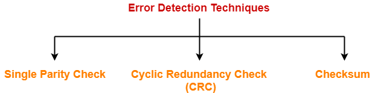
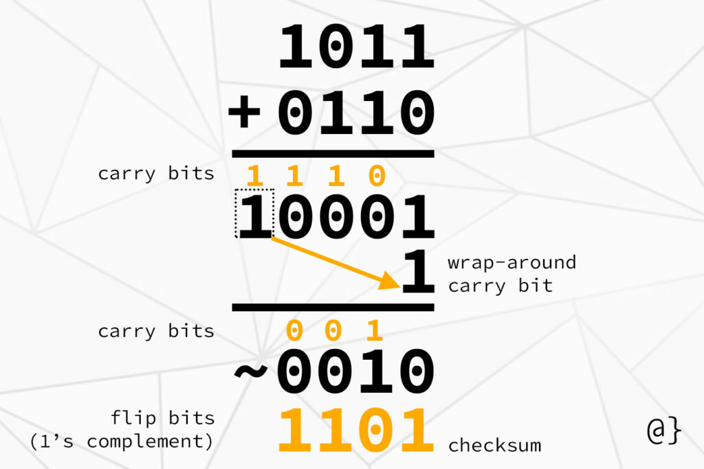
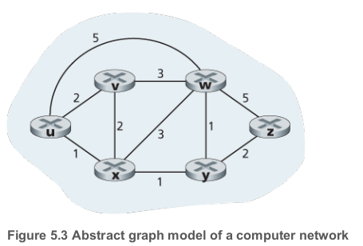
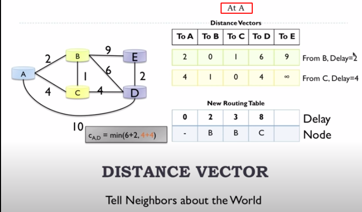
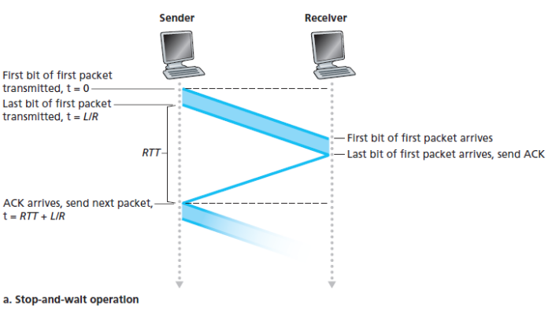

Calculations
Delays
| Unit | Transfer from second |
|---|---|
| Milliseconds (ms) | *10^3 |
| Microseconds (us) | *10^6 |
End-to-End Delay
The homogeneous delays
Suppose there are N−1 routers between the source host and the destination host.
Transmission delay
- Time to transmit packet into channel
- L is length of the packet in bits
-
R is transmission rate of the link in bits/sec
-
Example: 1 Gbps link, 8000 bit packet
Propagation delay
Note, easiest to convert KM to m
Queue delay
$$ D_{queue} = I(L/R)*(1-I) \quad\text{ for } \quad I<1 $$ Where
- I=\frac{L*a}{R} is traffic intesity
- L is constant packet-length in bits
- a is the average rate of packets/seconds
- R constant transmission rate
Packets left in buffer $$ \text{packets left in buffer} = \text{packets arrived} - floor(\text{time}/\text{delay}) $$
- Time is total time in the buffer.
- Time and delay must be in one unit, .e.g. ms
Nodal delay (the delay at a single route)
As a packet travels from one node (host or router) to the subsequent node (host or router) along this path, the packet suffers from several types of delays at each node along the path. The most important of these delays are the nodal processing delay, queuing delay, transmission delay, and propagation delay; together, these delays accumulate to give a total nodal delay.
— (Kurose and Ross 2013, 35–36)
Error detection techniques

Checksum calculation
To compute the Internet checksum of a set of 16-bit words: 1. Add the two numbers together, making sure that any carry into the 17th bit of this initial sum is added back into the 1's place of the resulting sum) 2. Take the one's complement of the result.
Example 1. 16-bit words
1001001110010011
1001100001001101
- Sum: 0010101111100001
- Complement: 1101010000011110
Example 2. 4-bit words

Example 3. 8-bit words
If the data unit to be transmitted is 10101001 00111001, the following procedure is used at Sender site and Receiver site.
Sender Site:
10101001 subunit 1
00111001 subunit 2
11100010 sum (using 1s complement)
00011101 checksum (complement of sum- that's swapping 0s and 1s)
_______________________________
Data | Checksum
--------------------|----------
10101001 00111001 | 00011101
Receiver Site:
10101001 subunit 1
00111001 subunit 2
00011101 checksum
11111111 sum
00000000 sum's complement
Routing algorithms
How does Dijkstra Algorithm work?
- The main idea to keep the best path found until now and the reference to previous vertex.
Let distance of start vertex from start vertex = 0
Let distances of all other vertices from start = infinity
WHILE vertices remain unvisited
Visit univisted vertex with smallest known distance from start vertex
FOR EACH univisited neighbour of the current vertex
Calculate the distance from start vertex
IF the calculated distance of this vertex is less than the known distance
Update shortest distance this vertex
Update the previous vertex with the current vertex
END IF
Add the current vertex on the list of visited vertices
END WHILE

How does Bellman - ford(Distance Vector) work?

The current node only know the distances to neighbors and the shortest paths to all other nodes from these neighbors. By using this information and the equation below we can decide which path we should take: $$ d_x(y) = min_v[c(x,v)+d_v(y)] $$
| Annotation | Description |
|---|---|
| c(x,v) | cost from x to v |
| d_x(y) | cost of least-cost path from x to y |
| min_v | min is taken over all neighbors v of x |
That's, how much it will cost if I take through this node, because I know my distance to it and his distances to all other nodes. Each neighbor see what his neighbors see.
B-F Equation example

- d_v(z)=5
- d_x(z)=3
- d_w(z)=3
Maintains
- D_x=[D_x(y):y\in N] - Node x maintains its own distance vector
- D_v=[D_v(y):y\in N] - Node x also maintains distance vectors for each neighbor v
DV is big as nodes in the network
Overview
- Send DV to Neighbors.
- Update DV using B-F Equation
- Repeat

RTT

Estimate RTT
Recommended value for \alpha is 0.125
Variability of the RTT
Recommended value for \beta is 0.25
Timeout
Example
Suppose that TCP's current estimated values for the round trip time (estimatedRTT) and deviation in the RTT (DevRTT) are 340 msec and 28 msec, respectively (see Section 3.5.3 for a discussion of these variables). Suppose that the next three measured values of the RTT are 200 msec, 220 msec, and 300 msec respectively. Compute TCP's new value of DevRTT, estimatedRTT, and the TCP timeout value after each of these three measured RTT values is obtained. Use the values of α = 0.125, and β = 0.25. Round your answers to two decimal places after leading zeros.
Given: $$ \text{EstimatedRTT}_0 = 340msec $$ $$ \text{DevRTT}_0 = 28msec $$ $$ \text{SampleRTT}_1 = 200msec \ $$ $$ \text{SampleRTT}_2 = 220msec \ $$ $$ \text{SampleRTT}_3 = 300msec \ $$ $$ \alpha=0.125 \ $$ $$ \beta=0.25 $$
- What is the estimated RTT after the first RTT?
- What is the RTT Deviation for the first RTT?
- What is the TCP timeout for the first RTT?
- What is the estimatedRTT after the second RTT?
- What is the RTT Deviation for the the second RTT?
- What is the TCP timeout for the second RTT?
- What is the estimatedRTT after the third RTT?
- What is the RTT Deviation for the the third RTT?
- What is the TCP timeout for the third RTT?
Traceroute
- Each hop represented by a different line
- TTL how long a packet can live before it discarded.
* * *means that the router at that hop doesn't respond to the packet.- First column the number of hop.
- Second column destination address.
- Traceroute will actually send three packets of data, and measure the time taken for each - this is shown in the 3 columns after the destination
eb.dk
(base) arm@arm-DELL:~$ traceroute www.eb.dk
traceroute to www.eb.dk (91.214.22.65), 30 hops max, 60 byte packets
1 _gateway (192.168.43.30) 156.456 ms 156.360 ms 156.414 ms
2 * * *
3 10.117.2.172 (10.117.2.172) 158.470 ms 158.430 ms 158.389 ms
4 10.219.160.20 (10.219.160.20) 158.348 ms * *
5 195-215-224-90-static.dk.customer.tdc.net (195.215.224.90) 301.828 ms 301.788 ms 301.747 ms
6 ae1-0.alb2nqp8.dk.ip.tdc.net (83.88.19.119) 301.709 ms 655.345 ms 655.230 ms
7 ae-6.edge2.Copenhagen2.Level3.net (4.68.72.193) 655.235 ms 654.950 ms 654.968 ms
8 213.242.108.194 (213.242.108.194) 654.853 ms 654.814 ms 654.772 ms
9 et-3-3-0-0.taas11cr1dk.gc-net.eu (77.243.32.202) 654.732 ms 654.691 ms 654.724 ms
10 212-98-126-214.hoer1cr1dk.gc-net.eu (212.98.126.214) 129.530 ms 129.451 ms 129.414 ms
11 * * *
12 * * *
13 * * *
...
princeton.edu
(base) arm@arm-DELL:~$ traceroute www.princeton.edu
traceroute to www.princeton.edu (104.18.5.101), 30 hops max, 60 byte packets
1 _gateway (192.168.43.206) 7.518 ms 7.757 ms 7.844 ms
2 * * *
3 10.117.2.172 (10.117.2.172) 155.456 ms 155.414 ms 155.363 ms
4 10.219.160.20 (10.219.160.20) 155.313 ms 155.263 ms 155.213 ms
5 irb-610.alb2tdm13nqe2.dk.ip.tdc.net (195.215.224.90) 155.173 ms 155.150 ms 155.091 ms
6 ae0-0.alb2nqp8.dk.ip.tdc.net (83.88.19.117) 155.069 ms 18.168 ms 22.646 ms
7 peer-as13335.alb2nqp8.dk.ip.tdc.net (128.76.59.91) 942.923 ms 943.039 ms 943.030 ms
8 104.18.5.101 (104.18.5.101) 942.894 ms 942.884 ms 942.875 ms
(base) arm@arm-DELL:~$
Utilization - fraction of time sender busy sending
- In relation to the performance of RTT
- Example: